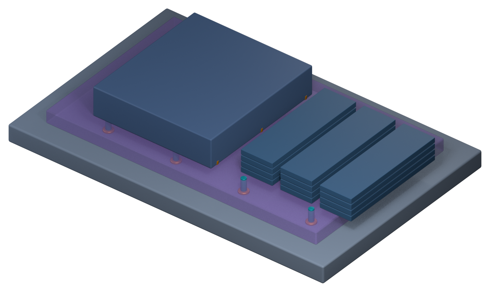

先进封装：把大芯片拆开，再拼回去
微缩越来越贵，裸片又不能无限大。于是产业换了思路：把一颗大芯片拆成几颗小芯片，各自用最合适的工艺做，再用先进封装把它们紧到像一颗芯片。
01为什么不再「一颗做大」
裸片有尺寸上限
受曝光机单次曝光范围限制，大约 26 × 33 mm，再大就要拼接。
大裸片良率低
面积越大，被缺陷打中的概率越高——坏一颗就整颗丢。
异质工艺更划算
运算用最先进节点，模拟/IO 用成熟节点，存储用专门工艺。
带宽需求暴增
AI 要在处理器与存储之间搬大量数据，靠封装把距离缩到最短。
02三种拼法
并排、扇出、往上叠。切换看剖面，注意导线和连接点在哪一层。
多颗芯片并排放在一片硅中介层上，中介层上有极细的导线，让芯片之间高速互连，再通过 TSV 连到下方基板。
最典型的例子：处理器 + 多组 HBM 并排。中介层可以拼接做到比一次曝光还大。
03连接点越密，带宽越大
芯片之间能传多少数据，很大程度取决于「每平方毫米能放多少个连接点」。拖动间距看数量怎么变。
04Chiplet：把芯片做成积木
良率相乘
8 颗芯片封装在一起，每颗良率 99%，整体也只有 0.99⁸ ≈ 92%。所以封装前必须充分测试，确保是 KGD。
混合键合
不用凸块，铜对铜直接键合，间距可以做到 10 µm 以下。代价是表面必须极平极净——一颗微粒就能撑出空隙。
前后段界线在模糊：先进封装大量使用光刻、电镀、CMP，这些原本是晶圆厂的工艺。所以现在常说「封装在往前走」，和晶圆制造越来越像。
053D 剖面：把整摞摆出来
同一套结构做成 3D：下面封装基板，中间紫色的是硅中介层（做成半透明，能看见里面的 TSV），上面左边是逻辑 die，右边是三组 HBM 堆叠。

为什么用 3D：这种「一层压一层」的结构，剖面图只能看到一条线，转到 3D 才看得出谁在谁上面、TSV 怎么穿过去。
＋先进封装的挑战
| 挑战 | 说明 |
|---|---|
| 散热 | 芯片紧密排列或叠在一起，热更难散出去 |
| 翘曲 | 不同材料热膨胀程度不同，封装越大越容易弯 |
| 测试 | 芯片叠起来之后，中间那颗很难再单独测 |
| 良率相乘 | 任何一颗芯片或一个连接点失败，整个封装都受影响 |
＋原文里的名词与现场经验
以下内容逐条取自原书，保留「定义 / 现场用法 / 常见混淆」与「情境 / 做法 / 为什么」的原始结构。
名词中介层（Interposer）
- 定义
- 放在芯片和封装基板之间的一层转接板，上面有细密的导线，让多颗芯片之间能高速连接。
- 现场用法
- 「这个产品的中介层超过一个曝光范围，要用拼接的方式做。」
- 相关名词
- 2.5D、TSV、微凸块、HBM
- 常见混淆
- 中介层不一定是硅，也有使用有机材料，或只在芯片之间埋入一小块硅桥的做法，成本和性能各有取舍。
名词混合键合（Hybrid Bonding）
- 定义
- 不使用凸块，让两颗芯片表面的铜连接点直接键合，同时周围的绝缘层也互相粘合的技术。
- 现场用法
- 「改用混合键合之后，连接点密度提高很多。」
- 相关名词
- 3D 堆叠、微凸块、CMP、晶圆键合
- 常见混淆
- 混合键合的「混合」，指的是金属和绝缘层两种材料同时键合，而不是混合使用两种封装方式。
Know-how一颗坏芯片，拖垮整个封装
- 情境
- 一个先进封装里放了八颗芯片。
- 做法
- 每一颗芯片在封装前都要经过充分测试，确保是已知良好裸片（KGD），封装过程中也尽量安排可以检查的步骤。
- 为什么
- 良率会相乘。就算每颗芯片的良率都是 99%，八颗全部都好的概率也只剩大约 92%。
- 没做会怎样
- 只要一颗芯片有问题，整个昂贵的封装连同其他好芯片都一起报废。
- 相关章节
- 第 19 章 晶圆测试
Know-how混合键合需要前段等级的干净和平坦
- 情境
- 两颗芯片要用混合键合直接键合。
- 做法
- 键合面要经过极精密的 CMP，键合前的清洗和环境控制也要达到晶圆厂的等级。
- 为什么
- 两个表面之间没有凸块可以缓冲，一颗微粒就会撑出一个空隙，表面稍微不平也会键合不良。
- 没做会怎样
- 一颗微粒可能让周围大量连接点同时失效。
- 相关章节
- 第 8 章 CMP、第 9 章 清洗与污染控制
＋延伸阅读
- John H. Lau，《Semiconductor Advanced Packaging》
- IEEE ECTC（Electronic Components and Technology Conference）历年论文
本章重点
- 微缩变贵、裸片有尺寸上限、异质工艺更划算，推动先进封装。
- 2.5D：并排放在中介层上；扇出：用 RDL 把接点摊开；3D：往上叠。
- 连接点间距越小，单位面积连接越多，带宽越大。
- Chiplet 让不同工艺的芯片像积木一样组合。
- 多芯片封装的良率相乘，KGD 与混合键合的洁净度都是关键。